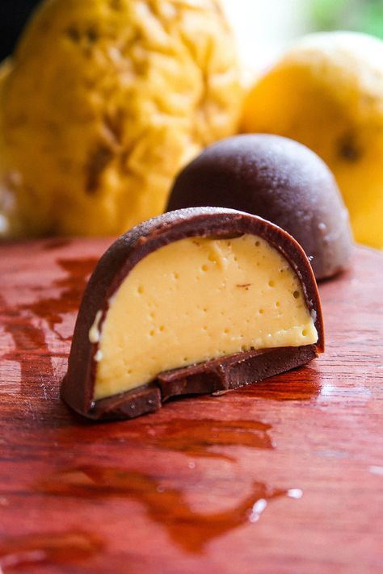

A trufa de maracujá é uma sobremesa irresistível que combina o sabor doce e ácido do maracujá com a cremosidade do chocolate. Feita com uma ganache de chocolate branco, creme de leite e polpa de maracujá, essa trufa é uma explosão de sabores tropicais. Para prepará-la, basta derreter o chocolate branco em banho-maria e misturá-lo com a polpa de maracujá. Em seguida, é só levar à geladeira para firmar. O resultado é uma trufa de maracujá com uma casquinha crocante por fora e um recheio macio e delicioso por dentro.